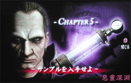
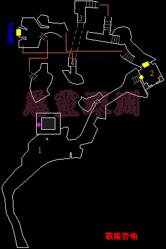
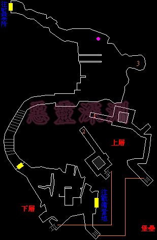
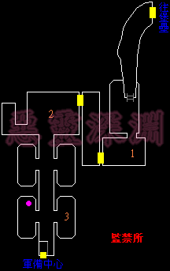
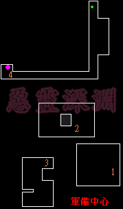
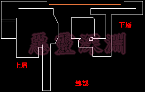
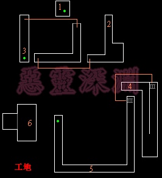

|
惡靈古堡～惡靈古堡４----The Another Order─Chapter5
|
|
 取得樣本 地圖上的紫色圓點●表示高價寶物的位置，青色圓點●表示可以使用勾繩槍的位置，標綠色的道具則是過關必須的重要道具。
 一開始的地方就有武器商人。 前進到編號1時，會有鏈砲兵出現，在此可以利用勾繩槍到上層拿高價寶物ブルーアイ（藍之眼）。 進入編號2的房間後，入口立刻被阻擋住，在這裡必須打倒一定數量的士兵，前進的門才會打開，士兵會從房間上方跳下，小心應 付。門打開後，同樣必須從編號3滑到編號4打開開關，往堡壘。
 進入堡壘退路就被關上了，雖然已經沒有機關槍台，但是這個空間佈滿許多持弓箭的士兵。當玩家接近編號1、2的開關時，都會分 別出現鏈砲兵，最好先打倒弓箭士兵再引出鏈砲兵，以免被夾攻。 到編號3時遇見了將Mike的直昇機轟掉的士兵，正拿著火箭砲觀望著直昇機的殘骸，趕緊接近把他解決吧。此處的高價寶物是レッ ドアイ（紅之眼）。
 在編號1對應著劇情，遇到Leon發病事件。 編號2附近有很多道具，也有武器商人和打字機。監禁區有幾個士兵，還有高價寶物グリーンアイ（綠之眼）。
 進入軍備中心下了樓梯，走沒幾步就遇上負傷的Krauser，強制移動到編號1的位置開始戰鬥。 這裡一旦擊退他就會強制使用勾繩槍到下個場地，從編號1開始，然後編號2、編號3，而在編號2、3的場地上有一些道具，最好在打 退他之前先拿，否則就拿不到了。 與Krauser戰鬥的方式，就使用小刀來戰鬥吧！使用的時機，他衝過來準備踢之前，或是使用複合按鍵閃躲之後，只要砍中了就連續 揮刀，打到一次就可以把他擊退。 打倒他之後，強制移動到編號4，有高價寶物盲目の蝶のランプ（盲眼的蝴蝶油燈）。通道底部有武器商人，使用勾繩槍往總部。
 在總部為了救Leon和Ashley而必須和Saddler對決，Saddler可說是最終魔王了，他的弱點在於口中的眼睛，要讓他露出眼睛，除了給予 他適當攻擊之外，也可以故意讓他的觸手抓住，但是後者會受到損傷，要自己評估一下恢復藥夠不夠。 場地有上下兩層，有許多道具可拿。Saddler會利用觸手在上下層移動，也會非常快速的移動，要隨時做好按複合按鍵來閃避攻擊的 準備。自以為打倒Saddler之後，馬上很不幸的被裝死的Saddler抓住了。
 Leon救了Ada之後，Ada會使用勾繩槍到達工地上層的編號1，在編號1使用勾繩槍可以到編號2，此時因為現場的定時炸彈啟動，所以 時間只剩下兩分鐘，兩分鐘內必需到達編號6才行，因為時間有限，中途千萬不可戀棧，只求通過即可。 依循著地圖前進，到編號3時使用勾繩槍可到達編號4。在編號5附近有兩個持火箭砲的士兵，在他們發射之前要趕緊阻止。 使用勾繩槍到編號6後，就可以拿取特殊彈火箭砲拋給Leon，Ada的任務就結束了。 破關之後可以記錄，所有的道具、寶物、金錢、文件等都可以繼承到下一輪的The Another Order遊戲。
疑難解答
レッドアイ（紅之眼） 1500ptas グリーンアイ（綠之眼） 1000ptas 盲目の蝶のランプ（盲眼的蝴蝶油燈） 4500ptas 組合──緑光蝶のランプ（綠光蝶的油燈） 6500ptas 赤光蝶のランプ（紅光蝶的油燈） 7000ptas 青光蝶のランプ（藍光蝶的油燈） 8500ptas 妖光蝶のランプ＿緑＋赤（妖光蝶的油燈＿綠＋紅） 11000ptas 妖光蝶のランプ＿緑＋青（妖光蝶的油燈＿綠＋藍） 13000ptas 妖光蝶のランプ＿青＋赤（妖光蝶的油燈＿藍＋紅） 15000ptas 輝く幻光蝶のランプ（閃耀的幻光蝶油燈） 32000ptas 未經許可禁止轉載連結 |
惡靈深淵Biohazard Abyss http://98.to/coolbio